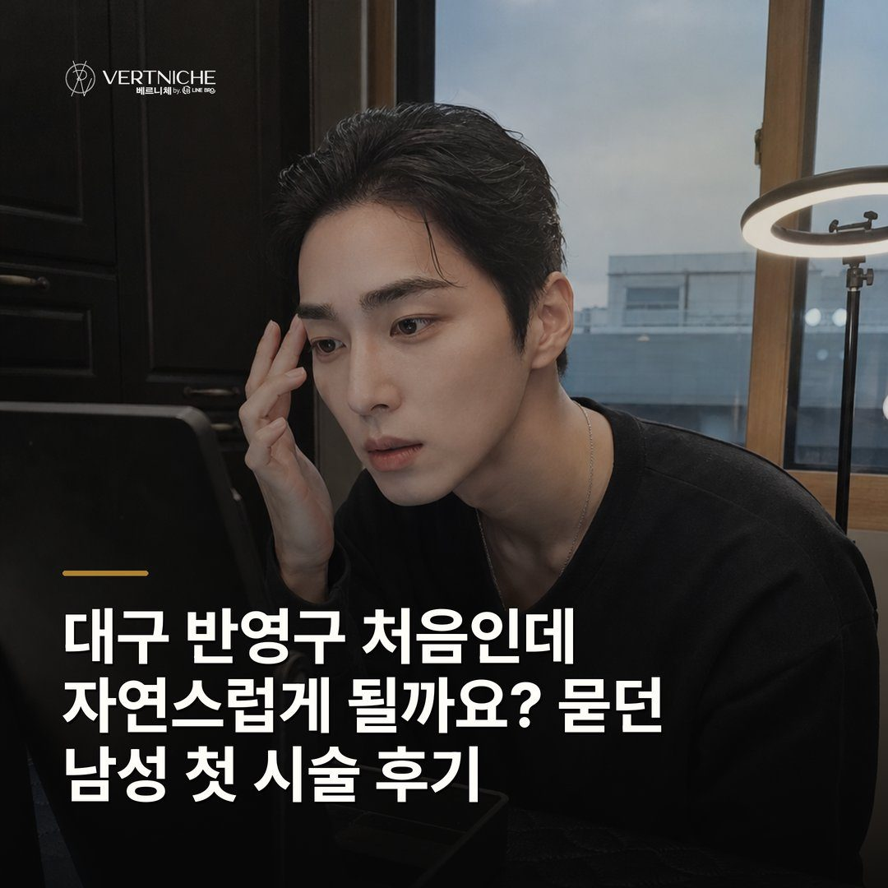

Care notes ·
대구 반영구 처음인데 자연스럽게 될까요? 묻던 남성 첫 시술 후기

- 처음 반영구는 티가 아예 안 나는 게 아니라 인상이 정리되는 쪽으로 자연스럽게 티가 나요
- 숱 없던 분은 새로 생기는 거라 며칠 적응기간이 있고, 이걸 알고 가면 만족도가 달라져요
- 색은 4주에 걸쳐 자리 잡으니 당일이나 2주차 색만 보고 판단하지 않아요
반영구가 처음이라 어울릴지 걱정하는 남성분들이 가장 많이 묻는 질문을, 눈썹 밀도와 회복 흐름을 기준으로 상담에서처럼 풀었습니다.
눈썹이 원래 있던 사람과 없던 사람은 출발선이 달라요
이건 처음 오시는 분께 꼭 먼저 짚고 들어가요. 눈썹이 어느 정도 있는 분이 교정 삼아 시술을 받으면, 있는 결에 얹는 거라 전후 차이가 크지 않아요.
자연스러움은 빈 공간을 남겨야 나와요
꽉 채운 눈썹이 잘한 게 아니라, 결 사이에 공간이 살아 있어야 자연스러워요. 요즘은 틀 안을 다 칠하는 게 아니라, 결 느낌을 살리면서 어느 정도 빈 공간을 유지하는 방식으로 많이 해요.
색은 4주에 걸쳐 자리를 잡아요
시술 당일 색만 보고 판단하면 안 돼요. 색은 재생주기 한 바퀴를 돌아야 정해져요.
끝라인만 따로 넣으면 떠 보여요
부분만 손대면 오히려 부자연스러워요. 끝라인만 반영구를 넣으면 그 자리만 떠 보이거든요.
정리할 때 확인할 것
- 진해지는 구간: 2~4일차는 원래 색보다 진해 보이는 게 정상
- 연해지는 구간: 8~14일차에 연해져도 끝난 게 아님
- 자리 잡는 시점: 4주 지나 최종 색 확인
- 세안: 시술 당일부터 눈썹만 피해서 가능
자주 묻는 질문
처음인데 남들이 시술한 거 바로 알아볼까요?
자연스럽게 들어가면 눈썹을 했는지 모를 정도예요. 다만 눈썹이 없던 분은 본인 눈에만 또렷하게 느껴지는 적응기간이 며칠 있어요. 그 구간만 지나면 인상이 좋아진 쪽으로 티가 납니다.
시술 당일에 바로 씻어도 되나요?
세안은 당일부터 가능해요. 다만 눈썹 부위만 피해서 하시면 됩니다. 색 자리 잡는 데 물기 관리가 중요하거든요.
진행 시간은 얼마나 걸리나요?
진정 크림 올리는 데 30분, 시술에 30분에서 1시간 정도 봐요. 디자인 상담까지 넉넉하게 시간 두고 오시는 게 좋아요.
요약입니다. 사례와 사진이 있는 전체 글은 네이버 블로그에서 볼 수 있습니다.